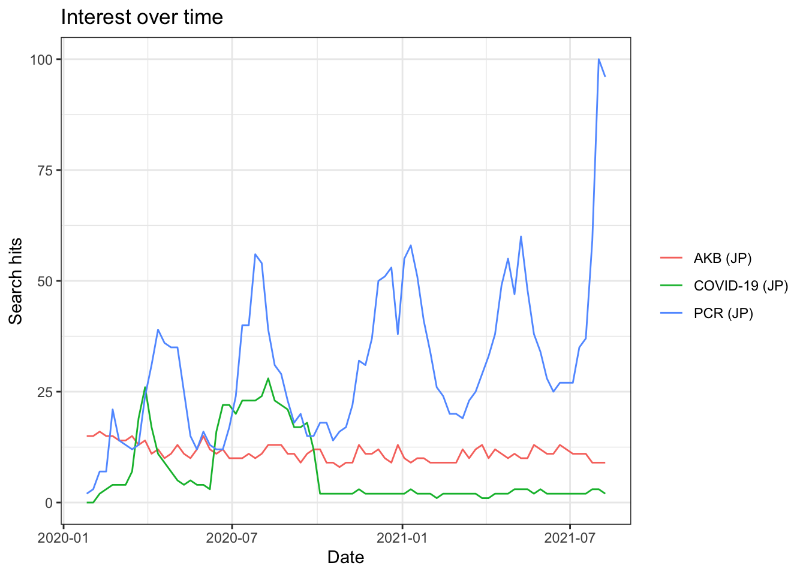
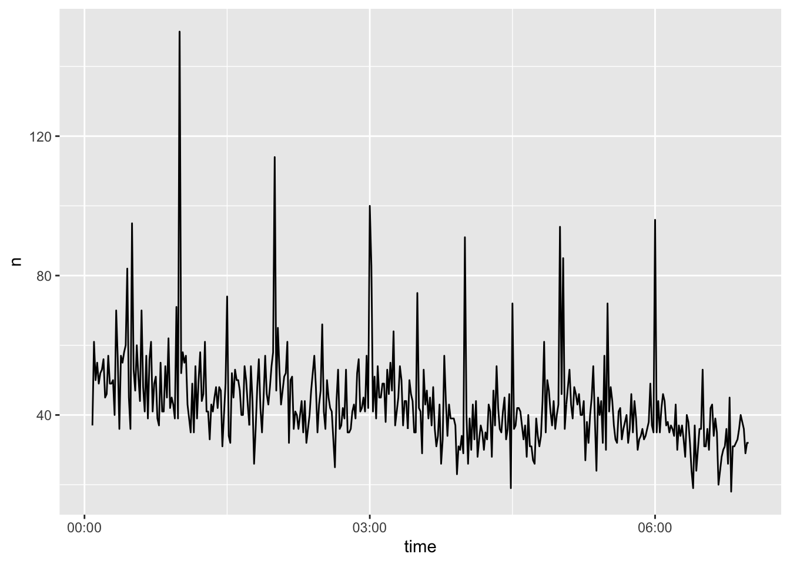

5 Covid-19データ
5.1 「社会」の関心を知る - gtrendsR
ときには暴力的にもなり,悲惨な結果をもたらすこともありますが,ソーシャルメディア（以下,SNS）は今では１人ひとりが自分の「声」を社会に発信するための人気のメディアとなっています.SNSは,良い意味でも悪い意味でも,マスメディアのフィルターを通さないため,よりストレートに人々の声を伝えることができます.
SNSのデータは一般的に,個々のユーザーが作成し,公開プラットフォームを使用して収集されます.これらの公開プラットフォームには,Twitter,Google,Facebook,InstagramなどのSNSが含まれます.こうして収集されたSNSのデータは,経済,政治などの社会の出来事や自然災害などについて,ほぼリアルタイムで発信される人々の考え,言いかえれば今現在の「社会」の声を知る上で有益な情報ソースとなっています.
SNSを通して新型コロナウィルスに対する「社会」の声を聞く方法をとりあげます.人々がどの程度新型コロナウィルスに関心を持っているのか,また新型コロナウィルスはどのように受け止められているのか等,こうした点を知るために,SNSで発せられたテキストをRを使って分析します.これにより,新型コロナウィルスに関する「社会」の声の一端を理解できると思います.
人々は新型コロナウィルスにどれほど関心を寄せているのでしょうか.これを知るために,さまざまな機関が行うアンケート調査からマスメディが実施する大規模な世論調査にまで及ぶ,さまざまな調査が利用可能です.こうした調査は有益な情報を提供し,自治体・政府の政策立案の基礎となることもあります.しかし,こうした調査は信頼性が高いものの,リアルタイムで人々の関心を知るにはどうしても遅れますし,「生」の声 — 調査機関,マス・メディアのフィルターを通さない声—を知るには限界があります.
わたしたちは常日頃,何かに対する情報を知りたいとき,インターネット検索を行っています.その意味では検索はわたしたちの関心を示していると言っても良いでしょう.インターネット検索の巨人は,言うまでもなく,Googleです.Googleは膨大な検索データを蓄積していますが,これをもとにGoogleトレンド(https://trends.google.com/trends/?geo=JP)と呼ばれるサービスを提供しています.Googleトレンドは人々の関心を知る上で強力なツール です.トレンドの計算にあたっては検索のピーク時を100としたときの相対指数です.したがって数値の大きさは検索条件を変更すると変わってしまうことに留意する必要があります.
Googleトレンドでは,地域,期間を指定し,任意の検索キーワードの相対的な人気の程度の推移を調べることができます.Rには,こうしたGoogleトレンドのデータを取得するパッケージgtrendsRやtrendyが開発されています. 本資料ではgtrendsRを利用します.それではこのパッケージをインストールし,新型コロナウィルスに対する人々の関心を見ることにしましょう.インストールするためにはコンソール画面に次のように入力し,エンターキーを押してください.
install. packages("gtrendsR")次にこのパッケージを利用するために,スクリプト画面に
library(gtrendsR)と入力し,[Run]をクリックします.これでgtrendsRを利用できます.最初に,Googleトレンドページでも調べることができますが,特定のキーワードを検索し,その推移を見てみましょう.このためのgtrendsRの基本的なコードは次のようになります.
gtrends(keyword="", geo ="", time ="")- keyword=“ ”には検索キーワードを入力します.複数のキーワードを入力したい場合はc( )を使い,たとえば,keywords = c(“新型コロナウィルス,””抗原検査”)と入力します.
- geo= “ ”ではiso２コードを使って検索地域を指定します.デフォルトではall,つまり全世界です.複数の地域を指定したい場合は,同じくc( )を使います.たとえば,日本,アメリカ,中国を指定したい場合,geo=c(“JP,””US”,”CN”)と入力します.
- time=“ ”によって検索期間を指定できます.たとえば,
- 過去４時間の場合はtime =“now 4-H”
- 過去7日間の場合はtime = “now 7-d”
- 過去３ヶ月の場合はtime = “today 3-m”
- 過去5年間の場合はtime = “today + 5-y”
- 任意の期間指定の場合, “Y-m-d Y-m-d”を使います.たとえば,2019年6月27日から2020年1月21日までを指定したい場合,time = “2019-06-27 2020-01-21”と入力します.
それではgtrendsRを使って,キーワードを「COVID-19」,「PCR」,「AKB」,地域を「日本」,期間を「2020年1月21日から2020年6月27日」とし,検索トレンドをみてみましょう.「AKB」は比較のために入れていますが,国民的アイドルを凌ぐ「COVID-19」と「PCR」の「相対的な人気」が分かります.スクリプト画面に次のように入力し,実行[Run]してください.
trend <- gtrends(keyword=c("COVID-19","PCR","AKB"), geo="JP", time = "2020-01-21 2021-08-13")この例では結果をtrendという名前をつけたオブジェクトに容れています.
summary(trend)## Length Class Mode
## interest_over_time 7 data.frame list
## interest_by_country 0 -none- NULL
## interest_by_region 5 data.frame list
## interest_by_dma 0 -none- NULL
## interest_by_city 5 data.frame list
## related_topics 0 -none- NULL
## related_queries 6 data.frame listを実行すると,次のオブジェクトリストが表示されます.
Length Class Modeinterest_over_time 7 data.frame list interest_by_country 0 -none- NULL interest_by_region 5 data.frame list interest_by_dma 0 -none- NULL interest_by_city 5 data.frame list related_topics 0 -none- NULL related_queries 6 data.frame list
summary()で確認されたtrendの中には上記のようなデータフレームが含まれています. * interest_over_timeは時間を通じた関心であり,検索キーワードの期間のヒット数を示すデータフレームです. * interest_by_regionは地域ごとの関心を示すデータフレームです. * interest_by_cityは同様に都市ごとの関心を示すデータフレームです. * related_queriesは関連した検索語が入ったデータフレームです.
この他,国ごとのデータ,DMAごとのデータ,関連したトピックごとのデータもありますが,ここでの例では国をJP,複数の検索ワードを指定したために,いずれもNULL（データなし）となっています.オブジェクトtrendの中のinterest_over_time（時間を通じた関心）はgtrendsRの中のplot.gtrends関数によって簡単にグラフ化できます.次のように入力してみてください.以下のようなグラフが表示されます.
plot(trend)
２月半ばまでは人々の関心は,新型コロナウィルスよりも,国民的人気アイドルAKBにあったことが分かります.しかし,3月末から4月初頭にCOVID-19に対する関心は急上昇します.PCR検査はいったん2月末に大きな関心を呼びます.これはおそらくダイヤモンドプリンセス号の新型コロナウィルスの集団発生に起因すると思われます.その後,PCRに対するヒット数も低下しますが,しかし感染者数が拡大するにつれて,4月にふたたび大きく注目されています.COVID-19, PCR検査の「人気度」は5月頃から落ち着きを見せ始め,6月の終盤からは再びAKBの「相対的人気」と同等か,それを下回ります.AKBの人気が大幅に伸びていくことを期待したいものです.
5.2 「社会」の声を集める - rtweet
ツイッターをつうじて,新型コロナウィルスに関する社会の声を集めることにします.Rにはツイッターからデータを収集する便利なパッケージrtweetが開発されています.他にもtwitteRというパッケージもありますが,今ではrtweetがツイッター・データにアクセするための標準的ツールとなりつつあります.
ツイッター情報を取得するためには,API(Application Programming Interface)認証という面倒な事前準備が必要でしたが,rtweetを利用することで,必要なのはTwitterアカウント(ユーザー名とパスワード)だけとなりました.認証を受けるには,Rの対話型セッション中にTwitterのAPIにリクエストを送るだけです.つまり,search_tweets(),get_timeline()などのrtweetパッケージの関数を使用するだけです.自分のTwitterアカウントに代わってWebブラウザのポップアップから認証を行うことができます.これによりトークン（パスワード生成）が作成され,今後の利用のために保存されます.
ツイッターデータ収集のために,rtweetは多くの関数を提供しています.たとえば,現在の日本のトレンドを知りたい場合は次のように入力します.
get_trends("japan")収集されたトレンドワードをみてみましょう.
get_trends("japan") %>%
select(trend) %>%
head()## # A tibble: 6 × 1
## trend
## <chr>
## 1 #Fateキャラ診断
## 2 DDRのRTA
## 3 #SS中国予選
## 4 #あんスタSSスタンプラリー
## 5 #njresurgence
## 6 小倉記念8月15日時点のトレンドワードですので,ツイッター上のつぶやきは「レジ袋」の有料化や「ディズニー」の再開についてのものが多いようです.経済関連では「日銀短観」がトレンドワードに入っています. rtweetパッケージの中でもっとも有益な関数はsearch_tweets()です.search_tweets()は検索語queryによって指定されたツイートデータを得ることができます.基本的なコードは以下のようになります,
rtweetパッケージの中でもっとも有益な関数はsearch_tweets()です.search_tweets()は検索語queryによって指定されたツイートデータを得ることができます.基本的なコードは以下のようになります.
seach_tweets(q="検索語",n = 取得するツイッターの数)q= “corona virus”と入力すると,“corona”と“virus”の両方の検索語と含んだツイートを探します.つまり検索語の間にスペースを容れると,and検索になります.OR検索を利用する場合は,q=“corona OR virus”とします.
取得できるツィート数にはAPIの制限があります.ツィーターの場合は,6～9日分の過去のツイート,1回のAPIコールで18,000ツイート,1時間に100回のリクエストに制限されています.このため特定のイベント（例えば自然災害や選挙やなど）についてデータを集めるさいには,先を考えてデータ収集を行う必要があります.
それでは新型コロナウィルスに関するツイートを集めてみましょう.新型コロナウィルスに関連した検索後としては“covid-19,” “coronavirus”が考えられます.両方のいずれかを含む（つまりOR検索）ツイートを探してみましょう.上限を18,000ツイートとしておきます.さらに,リツイートは除外するために,include_rts=FALSE（リツイートを含める場合はTRUEです）を入れ,言語を英語に指定するために,引数lang=“en”と指定します.そして結果をオブジェクトtweet_covidに容れます.
tweet_covid <- search_tweets(q="covid-19 OR coronavirus", n = 18000,include_rts = FALSE,lang = "en")これによってtweet_covidというデータフレームが出来上がります.コンソール画面に“tweet_covid”と入力すれば,内容が表示されます.そのそれぞれの行（観察値）は異なったツイートです.過去９日間（実際には,数時間のうちに18,000のツィートに達してしまいます）に,このキーワードを含むツィートがどれだけつぶやかれたのかをグラフにしてみましょう rtweetパッケージの中のts_plot()関数によってその頻度を簡単にみることができます.次のように入力すると次のグラフが描かれます.
ts_plot(tweet_covid, by = "mins")